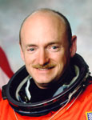

Lyndon B. Johnson Space Center
Houston, Texas 77058
|
National Aeronautics and Space Administration Lyndon B. Johnson Space Center Houston, Texas 77058 |
 |
Biographical Data |
||
Mark E. Kelly (CAPTAIN, USN)
NASA Astronaut
PERSONAL DATA: Mark Edward Kelly is the son of Richard and Patricia Kelly, two retired police officers. He was born in Orange, New Jersey, on February 21, 1964, and raised in West Orange, New Jersey. Kelly is married to U.S. Congresswoman Gabrielle Giffords. Kelly’s identical twin brother, Scott J. Kelly, is also an astronaut and served as commander of International Space Station (ISS) Expedition 26. The Kelly brothers are the only siblings who have both traveled in space.
EDUCATION: Kelly graduated from Mountain High School in 1982. He received a B.S. degree in marine engineering and nautical science from the United States Merchant Marine Academy, graduating with highest honors in 1986. In 1994, he received an M.S. degree in aeronautical engineering from the U.S. Naval Postgraduate School.
AWARDS: Defense Superior Service Medal (with one bronze oak leaf cluster); Distinguished Flying Cross; Air Medal (with valor device and three bronze service stars); Navy Commendation Medal (with valor device and one bronze service star); Navy Achievement Medal; Southwest Asia Service Medal (with one bronze service star); Navy Expeditionary Medal; National Defense Service Medal (with one bronze service star); Navy Unit Commendation (with one bronze service star); Sea Service Deployment Ribbon (with one bronze service star); Overseas Service Ribbon; Kuwait Liberation Medal (Saudi Arabia); Kuwait Liberation Medal (Kuwait); NASA Exceptional Service Medal; NASA Space Flight Medal (with three bronze service stars).
EXPERIENCE: In December 1987, Kelly became a naval aviator and received initial training on the A-6E Intruder attack aircraft. He was then assigned to VA-115 (Attack Squadron 115) in Atsugi, Japan, and made two deployments to the Persian Gulf on the aircraft carrier USS Midway, flying 39 combat missions in Operation Desert Storm. After receiving his master’s degree, he attended the U.S. Naval Test Pilot School from June 1993 to June 1994. He has logged more than 5,000 hours in more than 50 different aircraft and has over 375 carrier landings.
At this time, Kelly remains on active duty. He is on loan to NASA and holds the rank of Captain in the U.S. Navy.
On Tuesday, June 21, 2011, Kelly announced his retirement from the U.S. Navy, and NASA, effective October 1, 2011.
SPACEFLIGHT EXPERIENCE: Kelly’s first trip into space was as pilot of STS-108. After several delays, Endeavour lifted off on December 5, 2001, on the final shuttle mission of 2001. STS-108 Endeavour visited the ISS, delivering over three tons of equipment, supplies, and a fresh crew to the orbiting outpost. Kelly and Mission Specialist Linda Godwin used the shuttle’s robotic arm to lift the Raffaello Multi-Purpose Logistics Module from the shuttle payload bay and attach it to a berth on the station’s Unity node. Mission managers extended Endeavour’s flight duration to 12 days to allow the crew to assist with additional maintenance tasks on the station, including work on a treadmill and replacing a failed compressor in one of the air conditioners in the Zvezda Service Module. Kelly traveled over 4.8 million miles and orbited the earth 186 times over 11 days and 19+ hours.
In July 2006, Kelly served as pilot for STS-121 Discovery, the second “Return to Flight” mission following the loss of Columbia in February 2003. The main purposes of the mission were to test new safety and repair techniques introduced following the Columbia disaster as well as to deliver supplies, equipment, and European Space Agency (ESA) astronaut Thomas Reiter from Germany to the ISS. The transfer of Reiter to the ISS returned the station to a three crew member staffing level. During the STS-121 mission to the ISS, the crew of Discovery continued to test new equipment and procedures for the inspection and repair of the thermal protection system that is designed to increase the safety of the shuttles. It also delivered more supplies and cargo for future ISS expansion. Kelly traveled over 5.28 million miles and orbited the Earth 202 times over 12 days and 18+ hours.
STS-124 Discovery was Kelly’s first mission as commander. Kelly and his crew delivered the pressurized module for Kibo to the ISS. The module is the largest component of the Kibo laboratory and the station’s largest habitable module. Discovery also delivered Kibo’s Remote Manipulator System. Perhaps the most important part they delivered was a replacement part for the station’s toilet. The single toilet on the ISS had been malfunctioning for a week, creating a potentially serious problem for the crew. Kelly traveled over 5.7 million miles and orbited the earth 218 times over 13 days and 18 hours.
STS-134 launched on May 16, 2011. Kelly’s wife, Gabrielle Giffords, traveled to Florida on her first trip since moving from Tucson to Houston in January after an attempted assassination. Kelly was the commander of the mission, which was Space Shuttle Endeavour’s last. He and his crew delivered the Alpha Magnetic Spectrometer (AMS) to the ISS. AMS is a 15,000-lb cosmic particle detector that was installed on the outside of the space station. Its experiments will help researchers study the formation of the universe and search for evidence of dark matter and antimatter. Kelly traveled more than 6.5 million miles and orbited the earth 248 times over 15 days, 17 hours, and 38 minutes.
JULY 2011